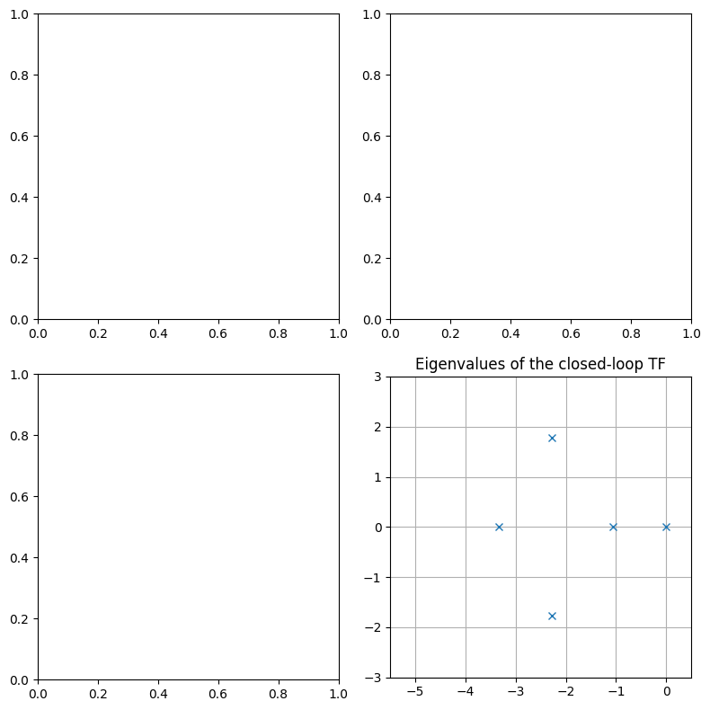
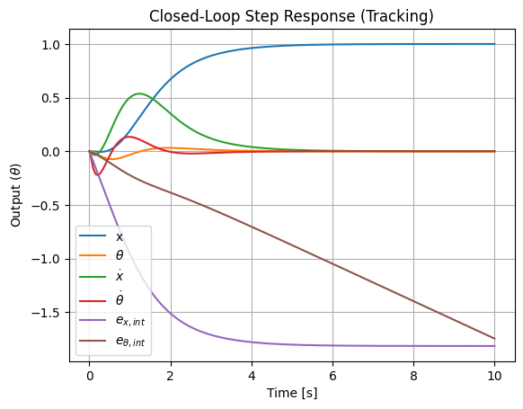
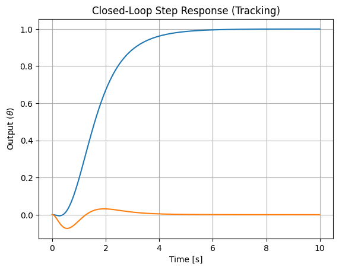
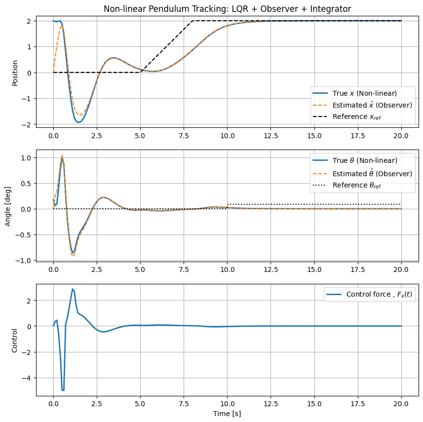

42.4. Inverted pendulum on a cart - only force actuation#
todo
Update \(\texttt{control}\) library version, to have \(\texttt{ct.poles()}\)
…
This is the same system as the inverted pendulum on a cart, analyzed here, but without torque actuation.
As a result, this system is under-actuated. It can track a reference \(x_{\text{ref}}\) for \(\theta_{\text{ref}} = 0\) (as it can achieve a stable dynamics of \(\theta \rightarrow 0\)), but it can’t track an arbitrary combination of \(x_{\text{ref}}\), \(\theta_{\text{ref}}\) simultanouesly. In order to track a \(\theta_{\text{ref}} \ne 0\) as an equilibrium of the system, there’s the need to allow for \(x\)-drift: brute-force approach is likely to fail, while a reduced-state model with state \(\mathbf{x} = [ v, \theta, \omega, e_{\theta,int} ]\) should be able to track desired constant \(\theta_{\text{ref}}\) with a deriving \(x(t) = v t\) (todo check it).
Contents.
Equations of motion: non-linear equations, linearized equations around equilibria; augmented equations for reference tracking
Control:
full-state feedback: this controller is used later in the observed-state feedback, exploiting separation principle
observed-state feedback: combination of observer and controller
Verification:
test control laws on non-linear equations
Here, algebraic Riccati equations (ARE) are solved for infinite time-horizon problems of optimal full-state feedback and optimal observer for stochastic disturbances:
42.4.1. Equations of motion with Lagrangian mechanics#
See Classical Mechanics: Lagrangian Mechanics
…
Second-order dynamical equation of the mechanical system reads
or at the first order
Linearized equation around the unstable equilibrium. First-order system equation around the unstable equilibium becomes
or
State-space (first-order) representation. With state and input
the first-order state-space representation of the system reads
This the equation we’re interested in, when studying the inverted pendulum on a cart.
42.4.2. Augmented system for tracking reference signal#
Let \(\mathbf{y}_{\text{ref}}\) a reference signal. An augmented system can be defined in order to used optimal control. Let
the state-space representation of the plant. Let \(\mathbf{y}_{\text{ref}}\) a desired output and the integral error
as a new state with dynamical equation
The optimal control is applied to the augmented system
Optimal control framework provides the opitmal gain matrix \(\hat{\mathbf{K}}\), so that \(\mathbf{u} = - \hat{\mathbf{K}} \mathbf{z}\) and the closed loop system becomes
If the output of the system is the angle \(\theta(t)\), with reference signal \(\mathbf{y}_{\text{ref}} = \theta_{\text{ref}}\), the dynamical system is a SISO system, whose state-space representation is
…
42.4.3. Libraries#
# Install the control library if running in Colab
try:
import control as ct
except ImportError:
!python3.11 -m pip install control
import numpy as np
import scipy as sp
import control as ct
import matplotlib.pyplot as plt
print(ct.__version__)
0.10.2
#> Inverted pendulum plant (linearized) equations
#> Parameters
g = 9.81
m = .1
M = .1
l = .2
cx = 1e-3
ca = 1e-3
#> Matrices of the second-order mechanical system
MM = np.array([[M+m, -m*l], [-m*l, m*l**2]])
MM_inv = np.linalg.inv(MM)
CC = np.array([[cx, .0], [.0, ca]])
KK = np.array([[.0, .0], [.0, -m*g*l]])
#> Matrices of the state-space representation
A = np.block([[np.zeros((2,2)), np.eye(2)], [-MM_inv @ KK, -MM_inv @ CC]])
B = np.block([[np.zeros((2,1))], [MM_inv @ np.array([[1.], [.0]])]])
C = np.block([np.eye(2), np.zeros((2,2))])
D = np.zeros((2,1))
sys = ct.ss(A, B, C, D)
#> Augmented system for reference input
# dx = A x + B u
# dz = e = y[0] - yref = C[0,:] x + D[0,:] u - yref
# y = x
# d [ x ] = [ A . ][ x ] + [ B ] u + [ . ] yref
# [ z ] [ C[:2,:] . ][ z ] [ D[:2,:] ] [-I ]
Aa = np.block([
[ A, np.zeros((4, 2))],
[C[:2,:], np.zeros((2, 2))]
])
Ba = np.block([
[B],
[D[:2,:]]
])
Ca = np.block([
[C, np.zeros((2,2))]
])
Da = np.zeros((2,1))
sys_aug = ct.ss(Aa, Ba, Ca, Da)
evals = ct.poles(sys_aug)
print(evals)
[ 0.00000000e+00+0.j 0.00000000e+00+0.j 0.00000000e+00+0.j
-1.01602637e+01+0.j 9.65526368e+00+0.j -4.99999873e-03+0.j]
42.4.4. Full-state feedback#
State-space representation of the open-loop system from the tracking error \(\mathbf{e}\) to the output \(\mathbf{y}\) reads
or
# LQR Weights
Q = np.diag([10, 10, 1, 1, 10, 10]) #
R = np.diag([1])
# R_values = np.linspace(0.001, .01, 4) # [0.001, 0.01, 0.1]
# R_values = np.logspace(-4, 4, 9)
omega_freq = np.logspace(-2, 2, 1000)
fig, ax = plt.subplots(2,2, figsize=(8, 8))
# for R in R_values:
# Compute LQR Gain
# K, S, E = ct.lqr(A, B, Q, R)
Ka, Sa, Ea = ct.lqr(sys_aug, Q, R)
# #> Loop transfer function L(s) = K * (sI - A)^-1 * B
# #> Open-loop TF, L(s) = G(s) R(s), with R(s) = K
# # from the error to the output
# A_ol = np.block([
# [ A - B @ Ka[:,:2], - B @ Ka[:,2:]],
# [ np.zeros((1,2)), np.zeros((1, 1))]
# ])
# B_ol = np.block([[.0], [.0], [1.]])
# C_ol = np.block([[ C - D @ Ka[:,:2], - D @ Ka[:,2]]])
# D_ol = np.zeros((1,1))
# sys_ol = ct.ss(A_ol, B_ol, C_ol, D_ol)
#> Closed-loop TF
# from the disturbance signal to the output
# Simulate closed-loop response with reference input
A_cl = Aa - Ba @ Ka
B_ref = np.block([[np.zeros((4,2))], [-np.eye(2)]])
# C_cl = np.block([[np.eye(2), np.zeros((2,4))]])
# D_cl = np.zeros((2, 2))
C_cl = np.eye(6)
D_cl = np.zeros((6,2))
sys_cl = ct.ss(A_cl, B_ref, C_cl, D_cl)
evals_cl = ct.poles(sys_cl)
# #> Frequency response
# mag_L, phase_L, omega_L = ct.frequency_response(sys_ol, omega_freq)
#> Plots
# #> Bode plots (first line) of L(s)
# ax[0,0].loglog(omega_L, mag_L, label=f'R={R}')
# ax[0,1].semilogx(omega_L, np.degrees(phase_L), label=f'R={R}')
# #> Nyquist diagram of L(s)
# ax[1,0].plot(mag_L*np.cos(phase_L), mag_L*np.sin(phase_L), label=f'R={R}')
#> Eigenvalues of the closed-loop system
ax[1,1].plot(np.real(evals_cl), np.imag(evals_cl), 'x', label=f'R={R}')
#> Critical point and circle in Nyquist plot
theta_v = np.linspace(0, 2*np.pi, 100)
# ax[1,0].plot([-1], [0], 'o', ms=5, color="black")
# ax[1,0].plot(np.cos(theta_v), np.sin(theta_v), '--', color="black")
# #> Formatting plots
# ax[0,0].set_title('Bode Magnitude'); ax[0,0].grid(True); ax[0,0].legend()
# ax[0,1].set_title('Bode Phase'); ax[0,1].grid(True)
# ax[1,0].set_title('Nyquist Plot'); ax[1,0].grid(True); ax[1,0].set_aspect('equal'); ax[1,0].set_xlim([-5, 5]); ax[1,0].set_ylim([-5, 5])
ax[1,1].set_title('Eigenvalues of the closed-loop TF'); ax[1,1].grid(True); ax[1,1].set_aspect('equal')
ax[1,1].set_xlim([-5.5, .5]); ax[1,1].set_ylim([-3., 3.])
fig.set_tight_layout(True)
print(evals_cl)
plt.show()
[-5.27272016e+01+0.j -3.34300171e+00+0.j
-2.27123174e+00+1.77694612j -2.27123174e+00-1.77694612j
-1.05816059e+00+0.j 1.60427392e-21+0.j ]

# Time vector
t = np.linspace(0, 10, 1000)
# Step response
# sys_cl is the system from your code (A_cl_obs, B_cl_obs, C_cl_obs, D_cl_obs)
# t_step, y_step = ct.step_response(sys_cl_obs, T=t)
theta_ref_deg = 10.
theta_ref = np.deg2rad(theta_ref_deg)
x_ref = 1.
timepts = t.copy()
inputs = [ np.ones(len(t)) * x_ref, np.ones(len(t)) * theta_ref ]
t_step, y_step = ct.forced_response(sys_cl, timepts, inputs)
plt.figure()
plt.plot(t_step, y_step.T, label=["x", r"$\theta$", r"$\dot{x}$", r"$\dot{\theta}$", r"$e_{x,int}$", r"$e_{\theta,int}$"])
plt.title('Closed-Loop Step Response (Tracking)')
plt.xlabel('Time [s]')
plt.ylabel(r"Output ($\theta$)")
plt.legend()
plt.grid(True)

#> Optimal state estimator
Edd = .1 * np.eye(1) # Process noise covariance
Err = .1 * np.eye(2) # Measurement noise covariance
# If Edd = .01 * np.eye(2) ct.lqe() function returns an error,
# returning "non symmetric QN - i.e. Edd - matrix". There's no
# way to make it see as symmetric...
#> Method 1.
Bd = B.copy()
L, P, E = ct.lqe(A, Bd, C, Edd, Err)
print(L)
"""
#> Method 2.
# Use LQR duality: lqe(A, B, C, V, W) is dual to lqr(A.T, C.T, V, W)
# Note: we use C.T because it replaces B in the dual problem
L_transposed, P, E = ct.lqr(A.T, C.T, V, W)
# The actual observer gain is the transpose of the 'feedback' result
L = L_transposed.T
"""
[[ 3.21284488 1.75111149]
[ 1.75111149 19.74082023]
[ 6.69438184 21.04491708]
[ 19.14950954 196.38318735]]
"\n#> Method 2.\n# Use LQR duality: lqe(A, B, C, V, W) is dual to lqr(A.T, C.T, V, W)\n# Note: we use C.T because it replaces B in the dual problem\nL_transposed, P, E = ct.lqr(A.T, C.T, V, W)\n\n# The actual observer gain is the transpose of the 'feedback' result\nL = L_transposed.T\n"
#> Optimal controller
# R = 1e-4
# Ka, Sa, Ea = ct.lqr(sys_aug, Q, R)
A_cl_obs = np.block([
[ A - B @ Ka[:,:4], - B @ Ka[:,:4], - B @ Ka[:,4:]],
[ np.zeros((4,4)), A - L @ C, np.zeros((4, 2))],
[ C - D @ Ka[:,:4], - D @ Ka[:,:4], - D @ Ka[:,4:]]
])
B_cl_obs = np.block([[np.zeros((4,2))], [np.zeros((4,2))], [-np.eye(2)]])
C_cl_obs = np.block([ C - D @ Ka[:,:4], - D @ Ka[:,:4], - D @ Ka[:,4:]])
D_cl_obs = np.zeros((2, 2))
sys_cl_obs = ct.ss(A_cl_obs, B_cl_obs, C_cl_obs, D_cl_obs)
# Time vector
t = np.linspace(0, 10, 1000)
# Step response
# sys_cl is the system from your code (A_cl_obs, B_cl_obs, C_cl_obs, D_cl_obs)
# t_step, y_step = ct.step_response(sys_cl_obs, T=t)
theta_ref_deg = 5.
theta_ref = np.deg2rad(theta_ref_deg)
x_ref = 1.
timepts = t.copy()
inputs = [ np.ones(len(t)) * x_ref, np.ones(len(t)) * theta_ref ]
t_step, y_step = ct.forced_response(sys_cl_obs, timepts, inputs)
plt.figure()
plt.plot(t_step, y_step.T)
plt.title('Closed-Loop Step Response (Tracking)')
plt.xlabel('Time [s]')
plt.ylabel(r"Output ($\theta$)")
plt.grid(True)

42.4.4.1. Non-linear problem#
from scipy.integrate import solve_ivp
from scipy.interpolate import interp1d
# solve_ivp(fun, t_span, y0, method="RK45", ..., args=tuple)
# fun(t, z, args=tuple)
def f(t, z, args):
"""
State, z = [ x, vareps, e_int ]
"""
#> args is supped to be a 1-element tuple with a dict
args_di = args
#> System parameters
g, l = args_di["g"], args_di["l"]
m, M = args_di["m"], args_di["M"]
cx, ca = args_di["cx"], args_di["ca"]
#> Linearized system matrices
A, B, C, D = args_di["A"], args_di["B"], args_di["C"], args_di["D"]
#> Optimal control matrix
Kx, Ke = args_di["Kx"], args_di["Ke"]
#> State-estimator L matrix
L = args_di["L"]
#> Reference input: select the proper y_ref for the current time 't'
y_ref_func = args_di["y_ref_func"]
yref = y_ref_func(t) # Interpolates to get the value at time t
# pos_ref, angle_ref = yref[0], yref[1]
#> Motor physical limits
motor_clipping = args_di["motor_clipping"]
u_max = args_di["u_max"]
#> State variables
x, th, v, om, eps, e_int = z[0], z[1], z[2], z[3], z[4:8], z[8:]
state = z[:4]
#> Feed-back control
u = - Kx @ state - Kx @ eps - Ke @ e_int
if ( motor_clipping ):
u = np.clip(u, -u_max, u_max)
#> Need for anti-windup
# if (u_ideal > u_max and (C @ x + D @ u - yref) > 0) or (u_ideal < -u_max and (C @ x + D @ u - yref) < 0):
# de_int = 0 # Stop integrating...
# else:
# de_int = C @ x + D @ u - yref
M_vel = np.array([
[ M+m, -m*l*np.cos(th)],
[-m*l*np.cos(th), m*l**2]
])
dx = v
dth = om
d_vel = np.linalg.inv(M_vel) @ \
np.array([
[-m*l*om**2*np.sin(th) + u[0] - cx*v],
[ m*g*l*np.sin(th) - ca*om]
])
deps = ( A - L @ C ) @ eps
de_int = C @ state + D @ u - yref
return np.concatenate(([dx], [dth], d_vel.ravel(), deps, de_int))
#> Reference signal
t_span = [0, 20]
t_eval = np.linspace(t_span[0], t_span[1], 200)
ref_theta_values = np.where(t_eval < 10, np.radians(0), np.radians(5))
# Transition settings
start_time = 5
duration = 3
end_time = start_time + duration
start_val = 0
end_val = 2
ref_x_values = np.piecewise(t_eval,
[t_eval < start_time, (t_eval >= start_time) & (t_eval <= end_time), t_eval > end_time],
[start_val,
lambda t: start_val + (end_val - start_val) * (t - start_time) / duration,
end_val]
)
y_ref_values = np.column_stack((ref_x_values, ref_theta_values))
#> Create an interpolator to pass to the solve_ivb function
y_ref_func = interp1d(t_eval, y_ref_values, axis=0, kind='linear', fill_value="extrapolate")
# 1. Bundle all parameters into the dictionary
sim_config = {
"g": 9.81, "l": l, "m": m, "cx": cx, # Example physical params
"M": M, "ca": ca,
"A": A, "B": B, "C": C, "D": D, # Linearized matrices
"Kx": Ka[:, :4], "Ke": Ka[:, 4:], # Optimal gains (Kx is 1x2, Ke is 1x1)
"L": L, # Observer gain
"y_ref_func": y_ref_func, # Ref input interpolator function
"motor_clipping": False, "u_max": .05 # Motor clippint
}
# 2. Set Initial Conditions [x, theta, v, omega, eps_theta, eps_omega, e_int]
# Example: System starts at 2 degrees, observer thinks it's at 0
# Error is defined to be eps = x_hat - x
z0 = [2., np.radians(10), .0, .0, -2., -np.radians(10), .0, .0, .0, .0]
# 3. Execute the simulation
from scipy.integrate import solve_ivp
sol = solve_ivp(
f,
t_span,
z0,
args=(sim_config,),
t_eval=t_eval,
method='BDF' # Default: "RK45" very slow for stiff problems(?)
)
import matplotlib.pyplot as plt
#> Output and control effort
fig, ax = plt.subplots(3, 1, figsize=(10, 10))
#> Estimation error, eps = x_hat - x, x_hat = x + eps
hat_x = sol.y[0] + sol.y[4]
hat_theta = sol.y[1] + sol.y[5]
# Plot True Pendulum Angle (convert back to degrees)
ax[0].plot(sol.t, sol.y[0] , label='True $x$ (Non-linear)', linewidth=2) # output
ax[0].plot(sol.t, hat_x , '--', label='Estimated $\\hat{x}$ (Observer)') # estimated output
ax[0].plot(sol.t, y_ref_func(sol.t)[:,0], '--', color="black", label=r'Reference $x_{ref}$') # reference
ax[1].plot(sol.t, sol.y[1] , label='True $\\theta$ (Non-linear)', linewidth=2) # output
ax[1].plot(sol.t, hat_theta, '--', label='Estimated $\\hat{\\theta}$ (Observer)') # estimated output
ax[1].plot(sol.t, y_ref_func(sol.t)[:,1], ':' , color="black", label=r'Reference $\theta_{ref}$') # reference
ax[0].set_title("Non-linear Pendulum Tracking: LQR + Observer + Integrator")
ax[0].set_ylabel("Position")
# ax[0].set_xlabel("Time [s]")
ax[1].set_ylabel("Angle [deg]")
u = -Ka[:,:4] @ sol.y[0:4] - Ka[:,:4] @ sol.y[4:8] - Ka[:,4:] @ sol.y[8:]
ax[2].plot(sol.t, u[0], label=r"Control force , $F_x(t)$", linewidth=2) # output
ax[2].set_ylabel("Control")
ax[2].set_xlabel("Time [s]")
ax[0].legend(); ax[0].grid()
ax[1].legend(); ax[1].grid()
ax[2].legend(); ax[2].grid()
plt.show()
#>
